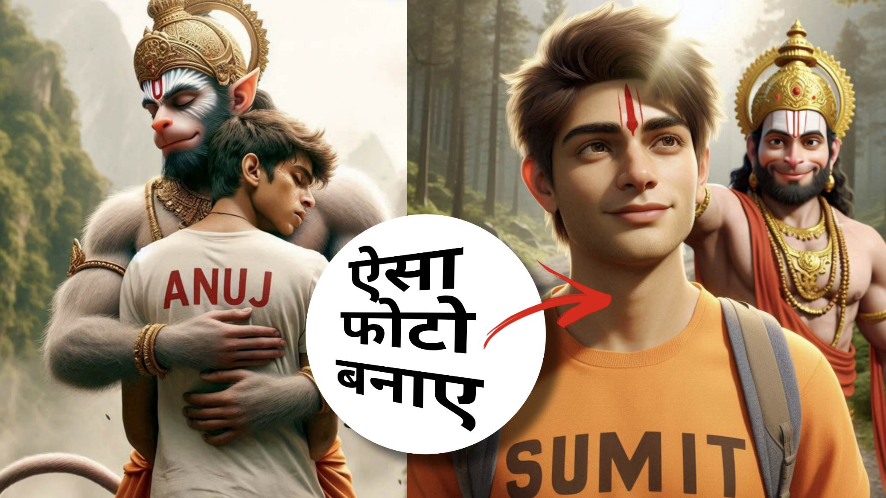
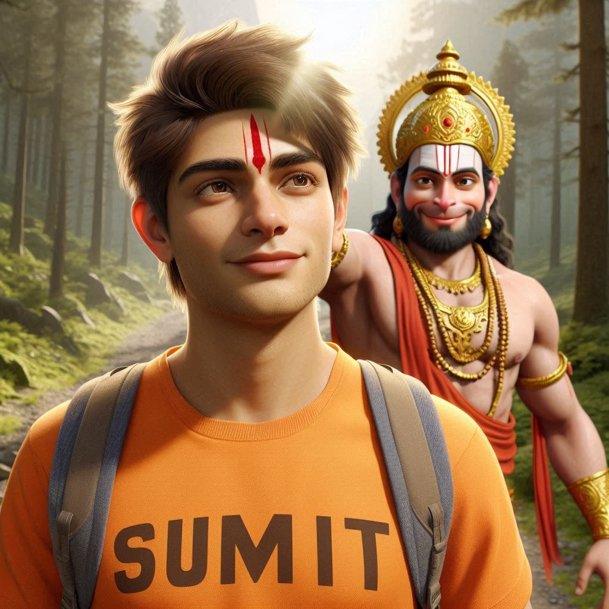
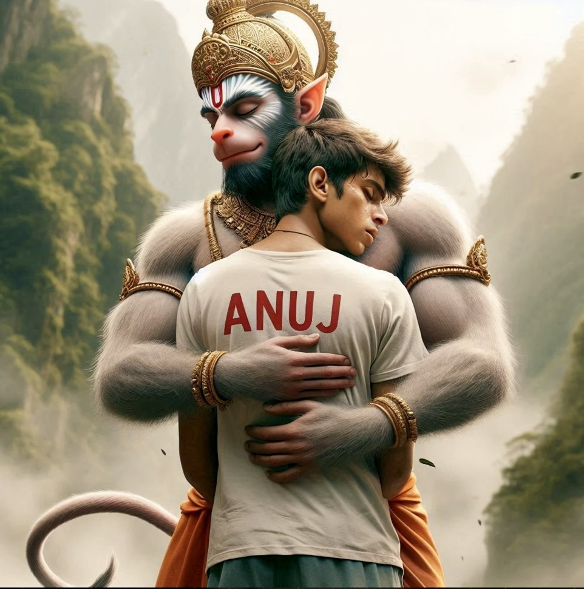
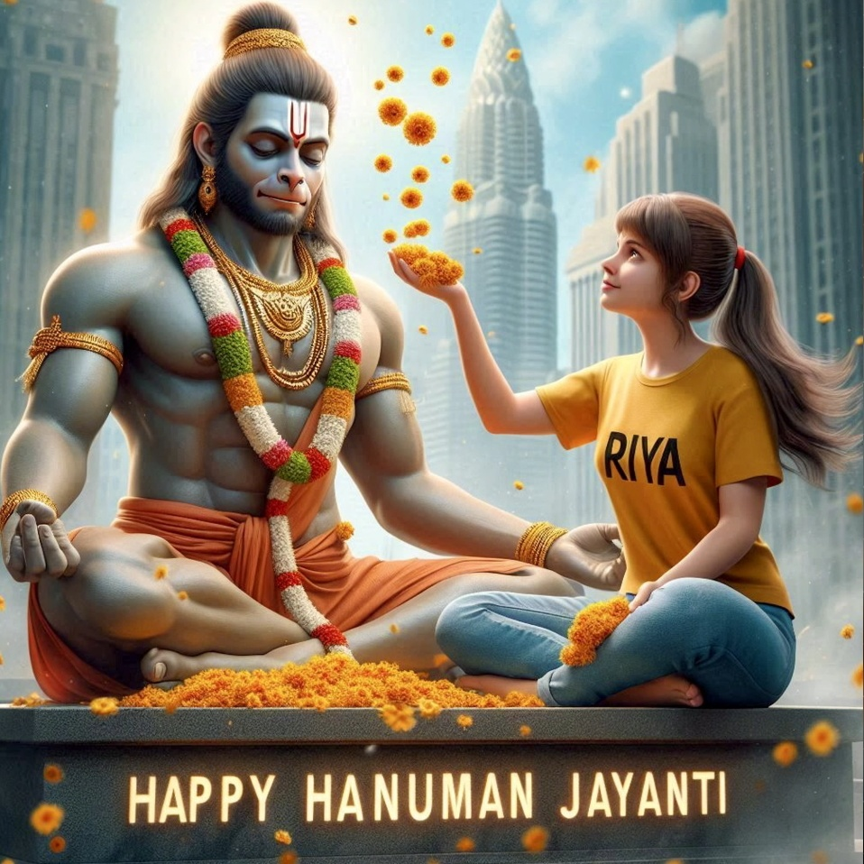

Home / Hanuman Jayanti Ai Photo Editing Prompts 2025
Hanuman Jayanti Ai Photo Editing Prompts 2025
By Prompt Library•12 April 2025

Hanuman Jayanti is a special occasion for devotees of Lord Hanuman. If you want to create a unique, personalized AIenerated photo for this festival, you’re in the right place.
With AI tools, you can design stunning images featuring yourself or your name alongside Lord Hanuman—no editing skills required!
How to Create Hanuman Jayanti AI Photos?
Using AI-powered platforms like Bing Image Creator (powered by DALL·E), you can generate custom Hanuman Jayanti images in minutes. Follow these simple steps:
Lord Hanuman meditating on a stone under a banyan tree. An 18-year-old boy kneels, wearing a saffron T-shirt with his name ‘Raj’ clearly printed on the front. He offers flowers and lights a diya. Hanuman ji blesses him as divine light glows. ‘Happy Hanuman Jayanti’ appears in golden Sanskrit font in the scenic background with bells and soft sunlight.
? AI PROMPT
A majestic image of Lord Hanuman stands tall against a backdrop of serenemountains and a colorful sunrise. In the foreground, an 18-year-old boy clad in a saffron T-shirt, emblazoned with the name "RAHUL" in bold white letters, performs a reverent pooja in front of the divine figure. The words "Happy Hanuman Janmotsav" adorn the sky, adding to the etherealambiance of the scene.

? AI PROMPT
A realistic 20-year-old young boy, wearing a saffron T-shirt with ‘SUMIT’ clearly printed in bold, walks on a mountain trail. Lord Hanuman appears behind him, smiling and placing his hand on Ashok’s head. A red tilak shines on Ashok’s forehead. Sunlight reflects through the forest, and ‘Happy Hanuman Janmotsav’ is clearly visible in golden letters in the sky.
? AI PROMPT
"A divine and emotional artwork depicting Lord Hanuman embracing a young man with affection and blessings. Lord Hanuman is portrayed with a radiant golden crown, traditional ornaments, and a glowing aura, symbolizing divinity. His expression is compassionate and serene. The young man, wearing a light teal kurta with the name 'MANISH' written on it, leans into the embrace with a peaceful smile, conveying gratitude and faith. The background features a warm, golden sunset

? AI PROMPT
breathtaking image depicts Lord Hanuman and an 18-year-old teenage boy embracing each other warmly as they walk together. The boy wears a white T-shirt, with his name "Anuj" boldly written on top, while both figures display deep emotional expressions. The background showcases majestic mountains and lush trees,creating a serene and hyper-realistic environment. The image is rendered in ultra-clear, hyper-realistic detail, suitable for 4K resolution.

? AI PROMPT
Create a Realistic Picture of LORD HANUMAN is depicted in meditation. Sitting on a Stone. A Realistic 20 year old girl with yallow Tshirt sprinkles flowers to HANUMAN and performs pooja. "Riya" is written in the Girl Tshirt. The Background features "Happy Hanuman Jayanti" in back wall Light. Background City. HD
Click “Create” and wait for AI to generate 4 image options.
Select your favorite and download it.
Why Use AI for Hanuman Jayanti Photos?
✅ No Editing Skills Needed – AI does all the work. ✅ 100% Unique Images – No copyright issues. ✅ Personalized with Your Name – Stand out on social media. ✅ Fast & Free – Create in seconds without cost.
Pro Tips for Better Results
Use clear, descriptive prompts for best quality.
Experiment with different backgrounds (temples, mountains, forests).
Try varying poses (meditating, praying, holding a diya).
Final Thoughts
Creating a custom Hanuman Jayanti AI photo is now easier than ever. Whether for WhatsApp DP, Facebook, or Instagram, these AI-generated images will make your celebration special. Try it today and share your devotion in a unique way!
Q: Is Bing Image Creator free? A: Yes, completely free with a Microsoft account.
Q: Can I edit the AI-generated photo later? A: Yes, use tools like Canva or Photoshop for further tweaks.
Q: How do I get the best quality images? A: Use detailed prompts and high-resolution AI tools like Leonardo.AI for premium results.
Liked this guide? Share it with friends & family! 🙏
This version is concise, user-friendly, and SEO-optimized while keeping it unique and valuable compared to competitors. Let me know if you’d like any refinements! 🚀